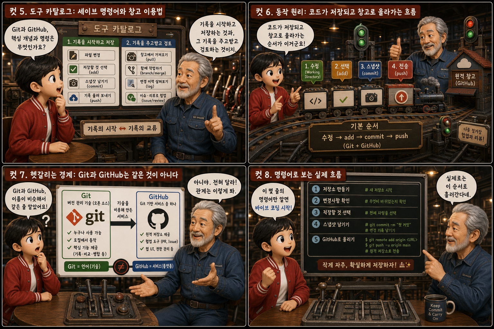
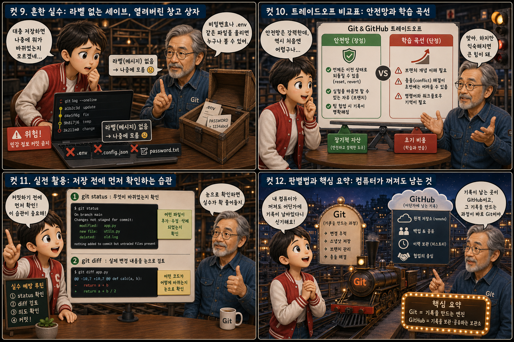

게임 속 ‘세이브 포인트’와 인터넷 저편의 ‘클라우드 창고’에 비유해, 코드를 저장하고 되돌리는 방법을 12컷으로 풀어봅니다.
GitvsGitHub
바이브 코딩을 하다 보면 잘 되던 코드가 갑자기 안 돌아가거나, AI가 고쳐준 코드가 오히려 더 꼬여버리는 순간이 꼭 옵니다. 그럴 때 ‘몇 분 전 상태로 돌아가고 싶다’는 생각, 다들 한 번쯤 해보셨을 겁니다. Git은 바로 그 순간을 위해 작업 중간중간 스냅샷을 저장해두는 도구이고, GitHub는 그 스냅샷들을 인터넷 어딘가에 안전하게 보관하고 필요하면 다른 사람과 나눠 쓸 수 있게 해주는 서비스입니다. 이 글에서는 이 두 가지를 게임의 세이브 포인트와 클라우드 창고에 비유해 하나씩 풀어봅니다.
PART 1 / 3 — 세이브 포인트의 정의와 비교 (컷 01–04)
fourcut-01 — 컷 01 ~ 04
컷 01
그때로 돌아갈 수 있다면?
게임을 하다 실수로 죽으면 마지막 세이브 포인트로 돌아가듯, 코드가 엉망이 됐을 때도 이전 상태로 돌아갈 수 있다면 어떨까.
바이브 코딩을 하다 보면 잘 되던 코드가 갑자기 안 돌아가거나, AI가 고쳐준 코드가 오히려 더 꼬여버리는 순간이 꼭 옵니다. 그럴 때 ‘몇 분 전 상태로 돌아가고 싶다’는 생각, 다들 한 번쯤 해보셨을 겁니다. Git은 바로 그 순간을 위해 작업 중간중간 스냅샷을 저장해두는 도구이고, GitHub는 그 스냅샷들을 인터넷 어딘가에 안전하게 보관하고 필요하면 다른 사람과 나눠 쓸 수 있게 해주는 서비스입니다. 이 시리즈는 이 두 가지를 게임의 세이브 포인트와 클라우드 창고에 비유해 하나씩 풀어봅니다.
컷 02
정의부터 명확히: 세이브 포인트란 무엇인가
Git은 파일이 바뀔 때마다 그 순간의 상태를 통째로 기록해두는 버전 관리 시스템이며, 이렇게 기록된 하나의 스냅샷을 “커밋(commit)”이라고 부른다.
Git은 내 컴퓨터 안에서 코드 파일이 바뀌는 과정을 하나하나 기록해주는 프로그램입니다. ‘저장’을 누를 때마다 지금 상태를 통째로 찍어두는 것이 아니라, 내가 ‘지금까지 한 작업을 스냅샷으로 남기고 싶다’고 명령할 때마다 그 순간을 기록하는데, 이 기록 하나하나를 commit이라고 부릅니다. 게임에서 세이브 포인트를 밟아야 그 순간이 저장되듯, Git도 내가 직접 ‘커밋’을 해야 그 시점이 남습니다. 그래서 커밋을 자주 해둘수록 나중에 되돌아갈 수 있는 지점도 촘촘해집니다. version control system
컷 03
나란히 비교: 내 컴퓨터 안의 세이브 시스템 vs 인터넷 저편의 창고
Git은 내 컴퓨터 안에서 버전을 기록하는 로컬 도구이고, GitHub는 그 기록을 인터넷에 올려 백업하고 공유하는 원격 서비스다.
Git은 인터넷 연결 없이도 내 컴퓨터 안에서 혼자 돌아가는 프로그램입니다. 커밋을 만들고 이전 상태로 되돌리는 모든 작업이 내 하드디스크 안에서 이루어집니다. GitHub는 그 Git 기록을 인터넷 어딘가의 서버에 올려두는 서비스로, 컴퓨터가 고장 나거나 없어져도 코드가 사라지지 않도록 백업해주고, 다른 사람도 그 코드를 내려받거나 함께 수정할 수 있게 해줍니다. 즉 Git이 ‘세이브하는 방법’이라면, GitHub는 그 세이브 파일을 보관해두는 ‘클라우드 창고’입니다. local / remote
컷 04
한 문장으로 정리하면
이 한 문장만 기억해도 ‘내 컴퓨터에서 저장하는 것’과 ‘인터넷에 올려 공유하는 것’을 헷갈리지 않을 수 있다.
GIT
코드의 변화를 기록하고 되돌릴 수 있게 해주는 도구
GITHUB
그 기록을 인터넷에 보관하며 다른 사람과 나누는 서비스
definition
Git은 코드의 변화를 기록하고, 언제든 원하는 시점으로 되돌릴 수 있게 해주는 도구입니다. GitHub는 그 기록을 인터넷 어딘가에 보관해 백업해주고, 다른 사람과 코드를 나누거나 함께 작업할 수 있게 해주는 서비스입니다.
PART 2 / 3 — 도구 카탈로그와 동작 원리 (컷 05–08)

fourcut-02 — 컷 05 ~ 08
컷 05
도구 카탈로그: 세이브 명령어와 창고 이용법
Git과 GitHub를 다루는 데는 몇 가지 핵심 개념과 명령이 있으며, 이들은 각각 “기록을 시작하고 저장하는 것”과 “그 기록을 주고받고 검토하는 것”을 담당한다.
git init은 폴더에 세이브 시스템을 새로 설치하는 명령이고, git add는 저장할 파일들을 모아 담는 것이고, git commit은 실제로 그 순간을 스냅샷으로 남기는 것입니다. 브랜치(branch)는 원래 기록에서 갈라져 나온 평행 세계 같은 저장 줄기로, 원본을 건드리지 않고 실험해볼 수 있게 해줍니다. push는 내 컴퓨터의 커밋들을 GitHub 창고에 올려 보내는 것이고, pull은 반대로 창고에 있는 최신 기록을 내 컴퓨터로 받아오는 것입니다. 풀 리퀘스트(pull request)는 ‘이 변경사항을 원본에 반영해도 될지 검토해 달라’는 요청서로, 여러 사람이 함께 작업할 때 꼭 필요한 절차입니다.
컷 06
동작 원리: 코드가 저장되고 창고로 올라가는 흐름
파일을 수정하고, 저장할 것을 고르고(add), 스냅샷을 남기고(commit), 그 기록을 창고로 올려 보내는(push) 흐름이 Git과 GitHub를 함께 쓰는 기본 순서다.
작업 중 (working directory)→git add (스테이징)→git commit (스냅샷)→git push (GitHub 업로드)
코드를 고치고 나면 먼저 git add로 이번에 저장할 파일들을 고릅니다. 그다음 git commit으로 그 순간의 상태를 하나의 스냅샷, 즉 세이브 포인트로 남깁니다. 여기까지는 전부 내 컴퓨터 안에서 끝나는 일입니다. 이제 git push를 실행하면 내 컴퓨터에 쌓인 커밋들이 GitHub라는 창고로 올라가 백업되고, 팀원이 있다면 그들도 git pull로 이 최신 기록을 자기 컴퓨터로 받아올 수 있습니다.
컷 07
헷갈리는 경계: Git과 GitHub는 같은 것이 아니다
Git은 특정 회사의 제품이 아니라 누구나 쓸 수 있는 버전 관리 기술 자체이고, GitHub는 그 Git을 이용해 만든 여러 서비스 중 하나일 뿐이다.
많은 초보자들이 Git과 GitHub를 같은 것으로 헷갈립니다. Git은 리누스 토르발스가 만든 오픈소스 버전 관리 기술 자체로, 누구나 자기 컴퓨터에 설치해 무료로 쓸 수 있습니다. GitHub는 이 Git 기술을 바탕으로 만든 하나의 인터넷 서비스일 뿐이고, GitLab이나 Bitbucket 같은 비슷한 서비스도 존재합니다. 다만 GitHub가 가장 널리 쓰이고 커뮤니티가 크기 때문에 사실상 기본값처럼 여겨지는 것뿐이며, Git 없이는 애초에 GitHub도 쓸 수 없다는 점을 기억해두면 좋습니다. Git ≠ GitHub
컷 08
명령어로 보는 실제 흐름
바이브 코딩을 할 때 가장 먼저 익혀야 할 것은 저장소를 만들고, 변경사항을 확인하고, 커밋하고, GitHub로 올려 보내는 몇 줄의 기본 명령어다.
Git — 로컬에서 기록하기
# 새 저장소 시작
git init
# 변경된 파일 전부 선택
git add .
# 스냅샷으로 남기기
git commit -m "로그인 기능 추가"
GitHub — 창고로 올리기
// 원격 저장소 연결
git remote add origin <URL>
// 원격 저장소로 전송
git push -u origin main
실제로 손을 움직여보면 이렇습니다. 새 프로젝트 폴더에서 git init을 한 번 실행해 세이브 시스템을 설치하고, 코드를 수정한 뒤 git add .로 바뀐 파일 전부를 담습니다. git commit -m "로그인 기능 추가"처럼 이번 스냅샷이 무엇인지 메시지와 함께 저장하고, 마지막으로 git push origin main을 실행하면 이 기록이 GitHub 저장소로 올라갑니다. AI에게 코드를 맡기더라도 이 몇 줄의 흐름만 이해하고 있으면 지금 무슨 일이 일어나는지 파악할 수 있습니다.
PART 3 / 3 — 흔한 실수와 실전 습관, 핵심 요약 (컷 09–12)

fourcut-03 — 컷 09 ~ 12
컷 09
흔한 실수: 라벨 없는 세이브, 열려버린 창고 상자
커밋 메시지 없이 대충 저장하면 나중에 어떤 변경인지 알아볼 수 없고, 비밀번호나 .env 파일을 실수로 커밋해 공개 저장소에 올리면 누구나 그 정보를 볼 수 있게 된다.
⚠ 커밋 메시지 없이 대충 저장
커밋할 때 메시지를 대충 적거나 아예 비워두면, 나중에 몇 주 전 기록을 되돌아볼 때 그 커밋이 무엇을 바꾼 것인지 전혀 알 수 없게 됩니다. ‘로그인 버튼 색상 수정’처럼 짧더라도 무엇을 했는지 알 수 있는 메시지를 남기는 습관이 중요합니다.
⚠ .env가 그대로 공개 저장소에 올라감
더 위험한 실수는 비밀번호나 API 키가 담긴 .env 파일을 실수로 커밋해서 GitHub 공개 저장소에 그대로 올려버리는 것입니다. 한 번 공개 저장소에 올라간 정보는 지워도 기록에 남을 수 있습니다.
✓ 커밋 전에 반드시 확인
커밋 전에 무엇이 포함되는지, 그리고 커밋 메시지가 의미를 담고 있는지 반드시 확인해야 합니다.
컷 10
트레이드오프 비교표: 안전망과 학습 곡선
Git과 GitHub를 쓰면 언제든 이전 상태로 되돌릴 수 있는 안전망이 생기지만, 브랜치와 충돌(conflict) 같은 개념을 처음 익히는 데는 학습 곡선이 따른다.
처음엔 낯설어도, 되돌릴 수 있다는 안심이 남는다
비교 축
안전망 (얻는 것)
학습 곡선 (감수할 것)
되돌리기
이전 커밋으로 언제든 복구 가능
커밋을 자주 해둬야 촘촘하게 되돌릴 수 있음
협업
여러 명이 동시에 안전하게 작업 가능
브랜치 개념을 새로 익혀야 함
충돌 상황
GitHub에 백업되어 있어 안심
충돌(conflict) 해결 방법을 배워야 함
체감 난이도
장기적으로는 이득이 훨씬 큼
처음엔 명령어와 개념이 낯설게 느껴짐
Git과 GitHub를 쓰기 시작하면 가장 크게 얻는 것은 안심입니다. 코드가 잘못돼도 이전 커밋으로 언제든 되돌아갈 수 있고, 실수로 파일을 지워도 GitHub에 백업된 기록에서 복구할 수 있습니다. 다만 처음에는 브랜치가 왜 필요한지, 두 사람이 같은 부분을 고쳤을 때 생기는 충돌을 어떻게 풀어야 하는지가 낯설게 느껴질 수 있습니다. 이런 개념은 몇 번 직접 겪어보면 금방 익숙해지고, 그 이후로는 안전망이 주는 이득이 학습 곡선의 부담을 훨씬 넘어섭니다.
컷 11
실전 활용: 저장 전에 먼저 확인하는 습관
커밋하기 전에 git status로 무엇이 바뀌었는지 먼저 확인하고, git diff로 실제 변경 내용을 눈으로 검토하는 습관이 실수를 크게 줄여준다.
🔍 먼저, 무엇이 바뀌었나 → git status
수정된 파일 확인
새로 생긴 파일 확인
삭제된 파일 확인
🔍 그다음, 무엇이 달라졌나 → git diff
삭제된 줄(빨간색) 확인
추가된 줄(초록색) 확인
의도치 않은 변경 여부 확인
커밋을 누르기 전에 git status를 실행하면 지금 어떤 파일이 수정됐고, 어떤 파일이 새로 생겼고, 어떤 파일이 삭제됐는지 한눈에 볼 수 있습니다. 여기서 의도치 않게 바뀐 파일이 섞여 있지 않은지 먼저 점검할 수 있습니다. 그다음 git diff를 실행하면 각 파일에서 정확히 어떤 줄이 지워지고 어떤 줄이 추가됐는지 색깔로 구분해서 보여주므로, AI가 대신 고쳐준 코드라도 실제로 무엇이 바뀌었는지 직접 눈으로 확인할 수 있습니다. 이 두 명령을 커밋 전 습관으로 만들면 원치 않는 변경을 그대로 저장해버리는 실수를 크게 줄일 수 있습니다.
컷 12
판별법과 핵심 요약: 컴퓨터가 꺼져도 남는 것
내 컴퓨터가 꺼져도 어딘가에 여전히 남아 있는 것이 GitHub의 기록이고, 그 기록을 만들어내는 과정 자체가 Git이다.
가장 간단한 판별법은 이것입니다. 노트북을 끄거나 심지어 컴퓨터가 고장 나도 여전히 어딘가에 남아 있는 기록은 GitHub에 올려둔 것이고, 아직 내 컴퓨터 안에만 있는 커밋은 push하기 전까지는 그 컴퓨터와 운명을 함께합니다. Git은 코드가 바뀌는 매 순간을 스냅샷으로 남겨 언제든 되돌아갈 수 있게 해주는 세이브 시스템이고, GitHub는 그 세이브 파일들을 인터넷 창고에 보관해 잃어버리지 않게 지켜주고 다른 사람과 나눠 쓸 수 있게 해주는 서비스입니다. 바이브 코딩을 하다 무섭게 느껴지는 순간이 와도, 커밋을 자주 남기고 GitHub에 push해두는 습관만 있다면 최악의 경우에도 처음으로 돌아가지 않아도 됩니다.
Git은 코드가 바뀌는 매 순간을 스냅샷으로 남겨 언제든 되돌아갈 수 있게 해주는 세이브 시스템이고, GitHub는 그 세이브 파일들을 인터넷 창고에 보관해 잃어버리지 않게 지켜주고 다른 사람과 나눠 쓸 수 있게 해줍니다. 커밋을 자주 남기고 GitHub에 push해두는 습관만 있다면, 바이브 코딩이 무섭게 느껴지는 순간에도 처음으로 돌아가지 않아도 됩니다.